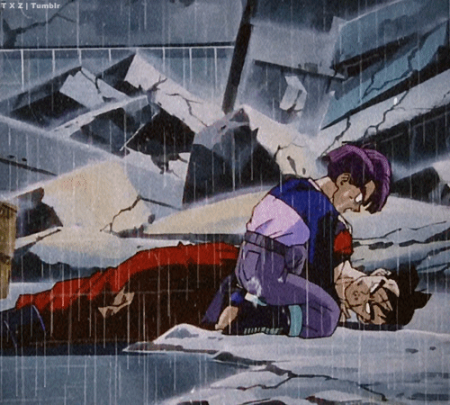

Loneliness brings us to the abyss Nietzsche describes, and forces us to make a decision. The temptation to eradicate unpleasant subjectivity is irresistible for perhaps most people, and they seek out any experience that will enable them to forget about it. And we see this happen with Trunks. In a world ravaged by Androids, Trunks has nobody but his mother and Gohan, the only father figure he's had. When Gohan dies, it is the strength that Trunks derives from the pain of this isolation that helps him transform and become even more powerful, thus enabling him to kill the Androids and save the world.